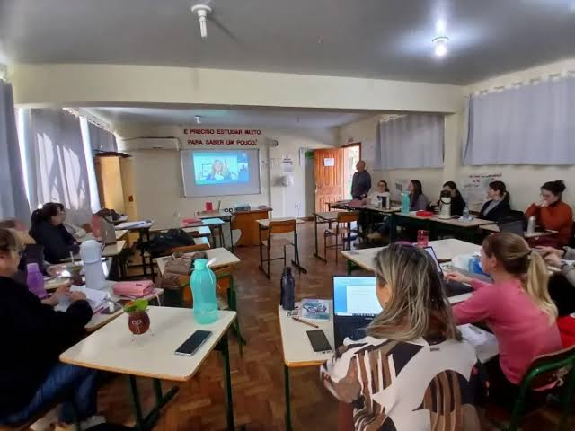

Exemplo de notícia • Projeto escolar
Semana da Educação movimenta o CETI
Palestras, oficinas e troca de conhecimento aproximam a comunidade escolar.
Ler mais
Neste exemplo de notícia, a escola apresenta uma semana dedicada à aprendizagem e ao diálogo. O texto definitivo deverá informar a programação, os participantes e os resultados do evento.